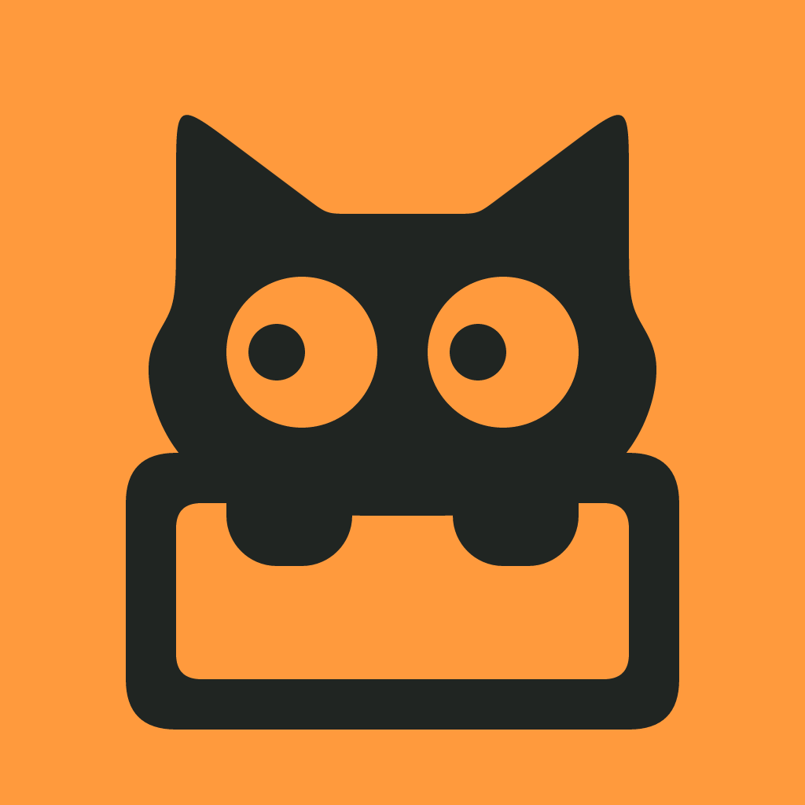
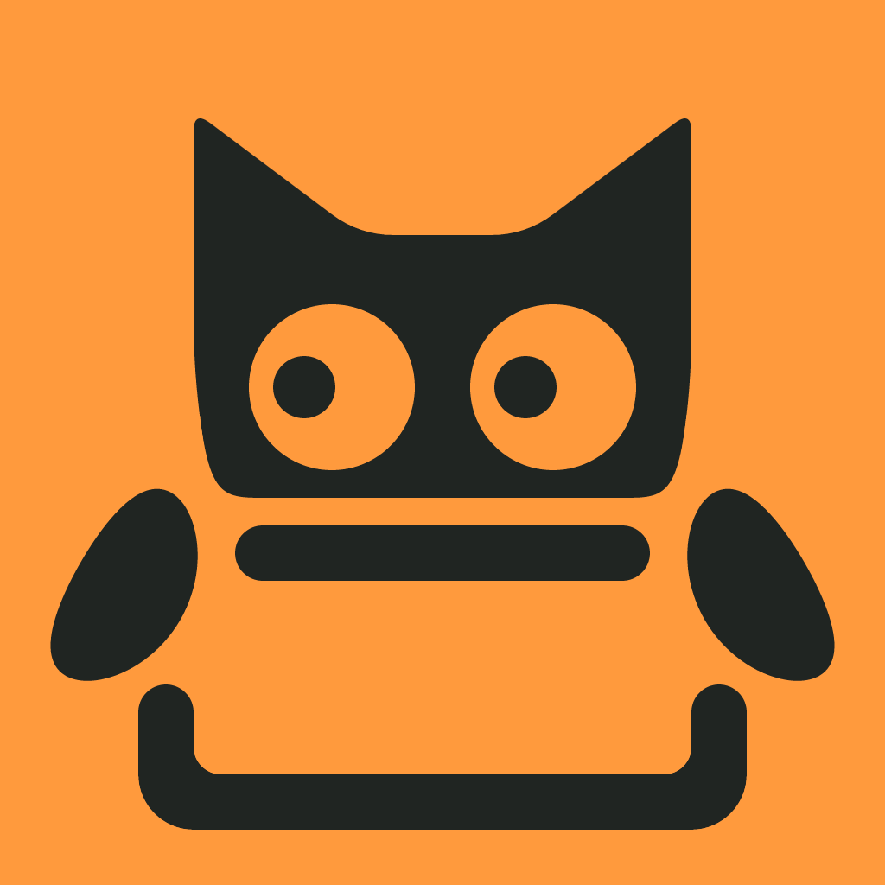
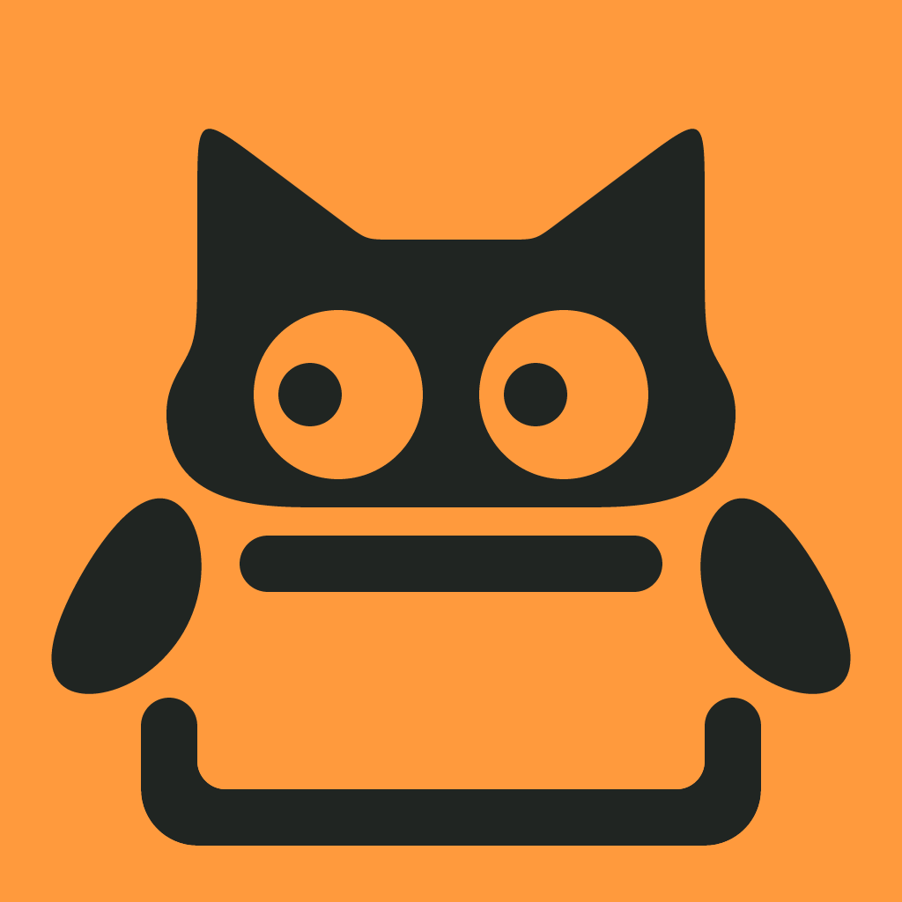
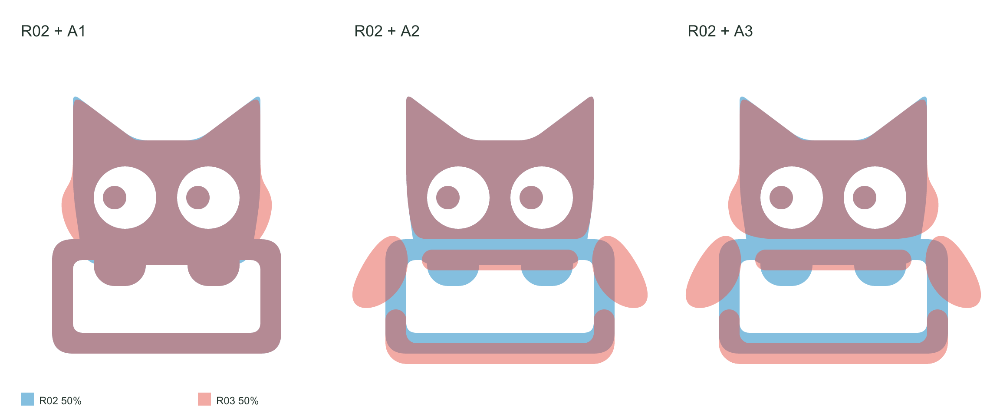

R02
原稿
已选母版 1024px 原图 ↗
1024px 原图 ↗本轮的比较基准：保留原有头侧直线、圆角方块爪和箱口交接。
A「探箱」已选定 · 线条精修
脸颊向外鼓，再自然收；爪子搭在外侧，把箱口留出来。
三个受控变体，分别观察头部、爪子与层次，以及两者合并后的效果。
1024px 原图 ↗本轮的比较基准：保留原有头侧直线、圆角方块爪和箱口交接。

1024px 原图 ↗脸颊先略向外鼓，再自然收向下巴；旧爪和旧层次保持，单独观察头部轮廓。

1024px 原图 ↗保留 R02 头部路径，改为外垂豆形爪，用留白与圆端明确前后关系。

1024px 原图 ↗同时采用连续猫脸、外垂豆形爪与分层留白，完整比较线条与交接处的变化。
原稿与每个变体各 50% 不透明度，重合区域呈混合色。

局部由矢量直接渲染为 1024 × 1024px，点击看原图。
128 / 32 / 16px；16pt 模板含浅深、1× 与 2×。
A3 将头侧、豆形爪和交接留白一起处理。箱体与开口比例保留，层次稿将箱体整体下移 4 个单位；主图分隔以 4 个单位为基准，小尺寸单独校正。头、箱、左爪、右爪均为独立路径，具名蒙版保留遮挡关系，可继续导入矢量工具微调。精修变体尚待维护者确认。